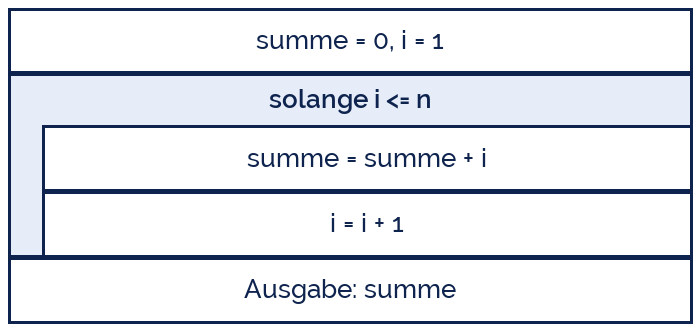

IndigoBunting
IndigoBunting
Good morning!
Nur das Schöne wird die Welt retten!
Fjodor Dostojewski
Nicht verzagen, Doc Alvers fragen!
Informatik — Grundkurs 13
Verzweigungen und Schleifen im Griff
Üben in Stufen, von Hand nachrechnen — und die Fallen, in die alle tappen
Nicht verzagen, Doc Alvers fragen!
Kapitel 01
Kurz aufgefrischt
Drei Bauformen, mehr gibt es nicht
Nicht verzagen, Doc Alvers fragen!
Auswahl und Wiederholung auf einen Blick
| Bauform | Python | läuft | typisch für |
|---|---|---|---|
| einseitige Auswahl | if Bedingung: | 0- oder 1-mal | Sonderfall abfangen |
| zweiseitige Auswahl | if … else: | genau einer der Zweige | Entweder-oder |
| mehrseitige Auswahl | if … elif … else: | der erste passende Zweig | Notenstufen |
| Zählschleife | for i in range(…): | so oft wie gezählt | Anzahl steht fest |
| bedingte Schleife | while Bedingung: | solange sie gilt | Anzahl steht nicht fest |
Bei elif gewinnt der erste passende Zweig — die Reihenfolge ist Teil der Logik
Beide Schleifen sind kopfgesteuert: erst prüfen, dann ausführen, also eventuell null Durchläufe
Nicht verzagen, Doc Alvers fragen!
Auswahl: der erste passende Zweig gewinnt
punkte = int(input('Punkte (0-60): '))
if punkte < 0 or punkte > 60: # Sonderfall zuerst abfangen
print('Ungueltige Eingabe')
elif punkte >= 50: # ab hier: der erste Treffer gewinnt
print('Note 1')
elif punkte >= 40:
print('Note 2')
elif punkte >= 30:
print('Note 3')
else: # alles, was uebrig bleibt
print('Note 4')Nicht verzagen, Doc Alvers fragen!
Wiederholung: gezählt oder bedingt
for i in range(1, 4): # Anzahl steht fest: drei Durchlaeufe
print('Durchlauf', i)
eingabe = -1 # vorbereiten, sonst gibt es die Variable nicht
while eingabe < 0: # Anzahl steht nicht fest
eingabe = int(input('Zahl >= 0: '))
print('Danke:', eingabe)Nicht verzagen, Doc Alvers fragen!
Kapitel 02
Der Schreibtischtest
Der Kopf ist der schnellste Debugger
Nicht verzagen, Doc Alvers fragen!
Was ein Schreibtischtest ist
Das Programm von Hand durchlaufen und jede Variable nach jedem Schritt notieren
Werkzeug: eine Wertetabelle — eine Spalte je Variable, eine Zeile je Durchlauf
Er findet genau die Fehler, die der Rechner ohne Fehlermeldung durchlaufen lässt
Und er beantwortet die wichtigste Frage bei jeder Schleife: Warum hört sie auf?
Wer nicht von Hand nachrechnen kann, hat das Programm nicht verstanden
Nicht verzagen, Doc Alvers fragen!
Testkandidat: die Summe von 1 bis n
n = 5
summe = 0
i = 1
while i <= n:
summe = summe + i
i = i + 1
print(summe)Nicht verzagen, Doc Alvers fragen!
Die Wertetabelle dazu
| Durchlauf | i vorher | i <= 5 ? | summe nachher | i nachher |
|---|---|---|---|---|
| 1 | 1 | wahr | 1 | 2 |
| 2 | 2 | wahr | 3 | 3 |
| 3 | 3 | wahr | 6 | 4 |
| 4 | 4 | wahr | 10 | 5 |
| 5 | 5 | wahr | 15 | 6 |
| — | 6 | falsch | 15 | 6 |
Die letzte Zeile ist die wichtigste: hier wird die Bedingung falsch, die Schleife endet
Ausgabe: 15. Und 1+2+3+4+5 ist tatsächlich 15 — der Test bestätigt das Programm
Nicht verzagen, Doc Alvers fragen!
Dasselbe als Struktogramm
Der Rahmen umschließt genau das, was wiederholt wird
i = i + 1 steht im Rumpf — nimmt man es heraus, läuft die Schleife ewig
Der Zähler wird vor der Schleife gesetzt, das Ergebnis danach ausgegeben
Struktogramm und Wertetabelle prüfen dasselbe von zwei Seiten

Nicht verzagen, Doc Alvers fragen!
Kapitel 03
Die Übungskaskade
Drei Stufen: nachvollziehen, ergänzen, bauen
Nicht verzagen, Doc Alvers fragen!
Wie wir heute üben
| Stufe | Aufgabe | was ihr abgebt |
|---|---|---|
| A — nachvollziehen | fertiges Programm von Hand durchlaufen | die Wertetabelle |
| B — ergänzen | Lückenprogramm vervollständigen und testen | die fehlenden Zeilen |
| C — bauen | aus der Beschreibung selbst entwickeln | Struktogramm und Code |
Jede Stufe wird erst abgehakt, wenn das Ergebnis stimmt — Stufe C ohne A ist Raten
Partnerprogrammierung: einer tippt, einer denkt mit und liest laut. Nach jeder Aufgabe tauschen
Nicht verzagen, Doc Alvers fragen!
Stufe A — was gibt dieses Programm aus?
zahlen = [4, 7, 2, 9, 5]
groesster = zahlen[0]
anzahl = 0
for z in zahlen:
if z > groesster:
groesster = z
if z % 2 == 1:
anzahl = anzahl + 1
print(groesster, anzahl)Nicht verzagen, Doc Alvers fragen!
Stufe B — drei Lücken, drei Entscheidungen
# Gesucht: die kleinste Zahl und wie viele Zahlen unter 5 liegen.
zahlen = [8, 3, 6, 1, 9, 4]
kleinster = ____
unter5 = 0
for z in zahlen:
if z ____ kleinster:
kleinster = z
if z < 5:
____
print(kleinster, unter5)Nicht verzagen, Doc Alvers fragen!
Stufe C — selbst entwickeln
# Eingabe: beliebig viele Noten, Abbruch mit 0. # Ausgabe: Anzahl, Mittelwert und beste Note. # # 1. Welche Schleifenart? Steht die Anzahl vorher fest? # 2. Welche Variablen muessen VOR der Schleife existieren? # 3. Womit startet die beste Note - und warum nicht mit 0? # 4. Was passiert, wenn die erste Eingabe schon 0 ist?
Nicht verzagen, Doc Alvers fragen!
Kapitel 04
Die üblichen Fallen
Fünf Fehler, die jeder einmal macht
Nicht verzagen, Doc Alvers fragen!
Symptom, Ursache, Gegenmittel
| Symptom | Ursache | Gegenmittel |
|---|---|---|
| Schleife läuft ewig | im Rumpf ändert sich die Bedingung nie | Zählerzeile suchen |
| einmal zu oft oder zu wenig | Zaunpfahlfehler bei range oder <= | Wertetabelle für 1 und n |
| falscher Zweig | elif-Reihenfolge falsch herum | Grenzfälle einzeln prüfen |
| Syntaxfehler bei if | = statt == geschrieben | = zuweisen, == vergleichen |
| Zeile läuft nie mit | Einrückung außerhalb des Blocks | Einrückung mitlesen |
Alle fünf findet ein Schreibtischtest — der Rechner meldet nur die vierte
Nicht verzagen, Doc Alvers fragen!
Falle 1 und 2 im Original
# Endlosschleife: i wird nie groesser
i = 1
while i <= 10:
print(i)
# Zaunpfahlfehler: laeuft nur bis 9, nicht bis 10
for i in range(1, 10):
print(i)
# richtig:
for i in range(1, 11):
print(i)Nicht verzagen, Doc Alvers fragen!
Wer ein Programm nicht von Hand nachrechnen kann, hat es nicht verstanden. Der Schreibtischtest ist billiger als jede Fehlersuche im laufenden Code.
Merksatz
Nicht verzagen, Doc Alvers fragen!
Fun Facts: Auswahl und Wiederholung
Böhm und Jacopini bewiesen 1966: Folge, Auswahl und Wiederholung genügen für jeden Algorithmus
Dijkstra schrieb 1968 „Go To Statement Considered Harmful“ — der Anfang vom Ende des Sprungbefehls
Der erste dokumentierte Bug war 1947 eine echte Motte im Relais des Harvard Mark II, eingeklebt ins Logbuch
Python kennt kein do-while — die fußgesteuerte Schleife baut man mit while True und break
Python-Schleifen dürfen ein else haben: es läuft, wenn die Schleife ohne break endet
Nicht verzagen, Doc Alvers fragen!
Eure Aufgabe: die Kaskade durchlaufen
Stufe A: das Programm aus Kapitel 3 von Hand durchlaufen, Wertetabelle abgeben
Stufe B: die drei Lücken füllen, in Thonny testen, Ergebnis mit der Tabelle vergleichen
Stufe C: die Notenauswertung selbst bauen — erst Struktogramm, dann Code
Zu jeder Schleife den Satz aufschreiben: Diese Schleife hört auf, weil …
Partnerprogrammierung: nach jeder Aufgabe Rollen tauschen, beide geben ab
Nicht verzagen, Doc Alvers fragen!